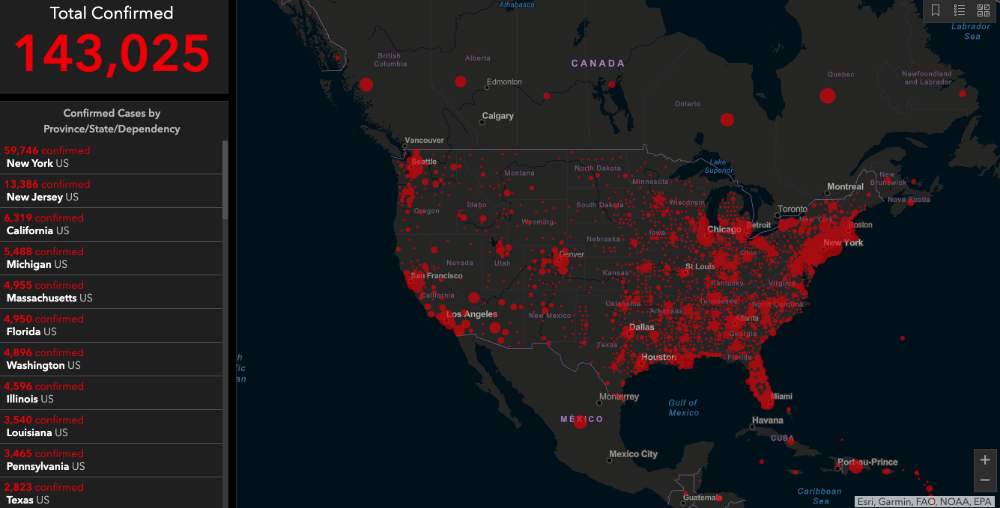

COVID on the rise
With COVID-19 on the rise there are many people staying inside their homes afraid to go outside. Although, there are some people who have to stay outside because they don’t have a choice. Homeless people are among them, since they don’t have a home to go to. Most homeless people are crowding at homeless shelters to keep themselves safe and healthy. However, the over crowding is resulting to a shortage in food and health items to the people who need it the most.
It is important that everyone in the community receives the proper health and hygiene items in order to keep themselves and other safe. To help, relevant federal agencies are issuing guidance from subject matter experts on lessons learned from previous response efforts to infectious diseases. Gov. Gavin Newsom has already taken further steps to move people off the streets and into indoor settings, including hotels and motels purchased in recent days and 450 state-owned trailers.